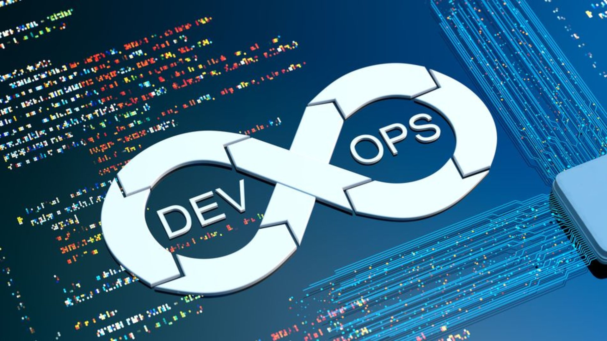
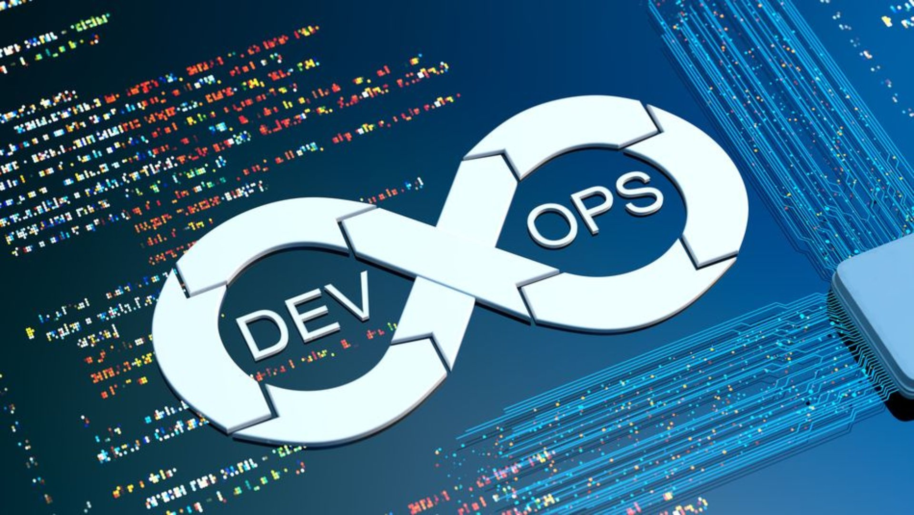

Bienvenidos
Soy Gastón González Iraeta, con más de dos años de experiencia en infraestructura IT y desarrollo de software
, residente en Montevideo, Uruguay.
Busco desarrollarme en el área de DevOps, implementando soluciones innovadoras y eficientes que optimicen procesos y mejoren la infraestructura.
Actualmente me encuentro en la etapa final de la carrera de Analista en Tecnologías de la Información en la Facultad de Ingeniería de la UDE (institución avalada por el MEC).
Como parte de mi desarrollo profesional, he creado este proyecto personal de una página web tipo CV, con el objetivo de destacar mis habilidades técnicas, mi experiencia laboral y mis intereses en el campo de IT.
 

Aquí puedes encontrar una lista detallada de mis conocimientos en DevOps, tales como configuración de redes, administración de servidores, virtualización, entre otros.
Aquí puedes encontrar una lista detallada de mis conocimientos en desarrollo de software, tales como lenguajes de programación, frameworks, metodologías ágiles, entre otros.

Aquí puedes encontrar una lista detallada de mis conocimientos en Infraestructura, tales como configuración de redes, administración de servidores, virtualización, entre otros.
He adquirido una sólida experiencia laboral en reconocidas empresas del ámbito informático, donde he tenido la oportunidad de aplicar de manera efectiva mis habilidades y conocimientos en la gestión de infraestructuras tecnológicas y el desarrollo de software.
Estudiante avanzado de Analista en Tecnologías de la Información, Facultad de Ingeniería UDE
Estoy comprometido con mi educación en Tecnologías de la Información, donde me dedico activamente a profundizar mis conocimientos en tecnología.
Un vistazo a mis conocimientos en idiomas y otras competencias clave que fortalecen mi perfil profesional, destacando habilidades que me permiten comunicarme eficazmente y adaptarme a entornos diversos, especialmente en el ámbito tecnológico.